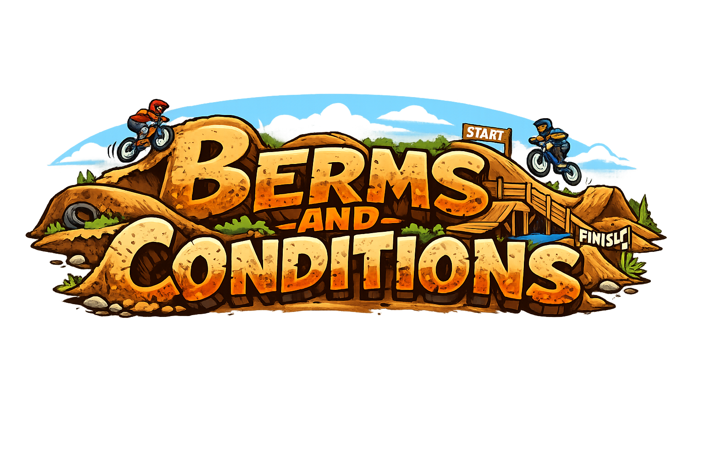

Berms & Conditions
Welcome to Pedal Forever.
This website exists to preserve BMX history, garage culture, survivor bicycles, New England mythology, weird roadside stories, questionable mechanical decisions, and the kind of memories that usually disappear when old garages get cleaned out.
By using this website, browsing this website, submitting information, contacting Pedal Forever, or entering any area of this digital garage, you agree to the following Berms & Conditions.
Pedal Forever Mission Statement
Pedal Forever was created to preserve BMX history before it disappears.
From 1970s nickel-plated race bikes to 1980s freestyle survivors, from 1990s parking-lot sessions to early 2000s skatepark culture, this project exists to document the stories, machines, people, scars, dents, and memories that made BMX what it is.
We believe originality matters. OEM parts matter. Survivor bikes matter. Patina matters. History matters.
Not every bike needs to become a polished museum piece. Some bikes deserve to stay exactly the way they survived.